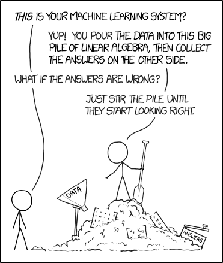
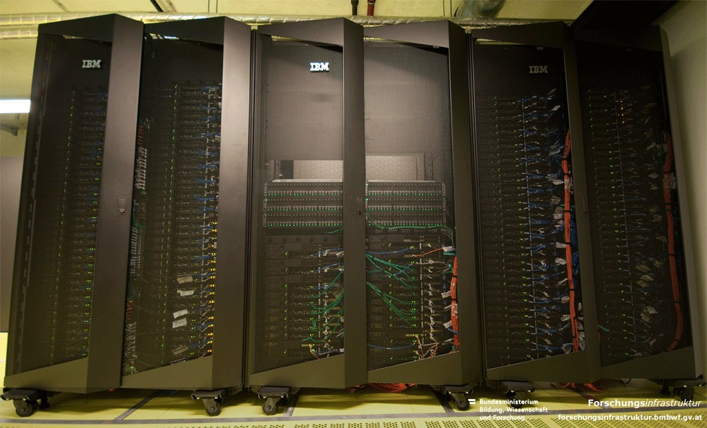
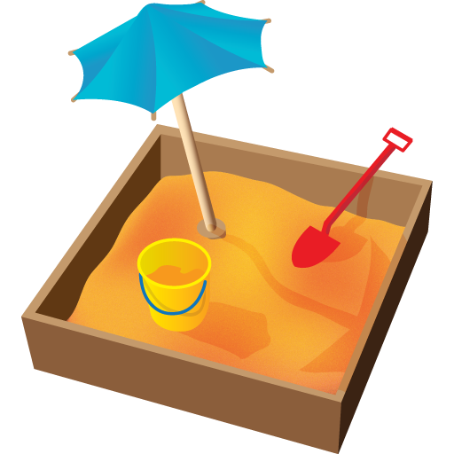
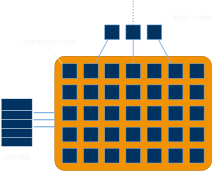
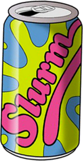

703308/703309 VO+PS High-Performance Computing
University of Innsbruck

“Riding a taxi is not a good way to learn how to drive.”
Principles
Definition of the traffic light
AI use is prohibited.
AI is permitted, but must be declared and comply with other restrictions
AI use is allowed.
AI use is recommended.
The traffic light applies to different types of AI use in the following way:
Creative tasks
Professional core tasks
Supporting tasks
Presentation quality assurance
Extremely professional-looking photo of Philipp Gschwandtner (© Andreas Friedle)



ssh cbxxxxxx@login.lcc3.uibk.ac.atpasswd
sbatch name_of_script
scancel job_id_list
squ (squeue -u $USER)
squeue for all users[cb761011@login.lcc3 ~]$ sbatch job.sh
Submitted batch job 184
[cb761011@login.lcc3 ~]$ scancel 184
[cb761011@login.lcc3 ~]$ sbatch job.sh
Submitted batch job 185
[cb761011@login.lcc3 ~]$ squ
JOBID PRIORITY PARTITION NAME USER STATE NODES CPUS TIME_LIMIT NODELIST(REASON)
185 504 lva test cb761011 RUNNING 1 8 30:00 n002code/job.sh
#!/bin/bash
# Execute job in the partition "lva" unless you have special requirements.
#SBATCH --partition=lva
# Name your job to be able to identify it later
#SBATCH --job-name test
# Redirect output stream to this file
#SBATCH --output=output.log
# Maximum number of tasks (=processes) to start in total
#SBATCH --ntasks=8
# Maximum number of tasks (=processes) to start per node
#SBATCH --ntasks-per-node=8
# Enforce exclusive node allocation, do not share with other jobs
#SBATCH --exclusive
/bin/hostnamesinfo
scontrol
sacct
PATH & LD_LIBRARY_PATH)
module availmodule loadmodule listmodule unloadmodule load openmpi/3.1.6-gcc-12.2.0-d2gmn55mpiexec -n $SLURM_NTASKS /bin/hostname*.so/*.a)mpiccmpic++mpiexec -n [num_processes] /path/to/application/home/cb76/<username> limited to 1 GB
/scratch/<username> limited to 16 TB (?)
both are network-mounted on all login and compute nodes
when using VS Code + Remote SSH, be sure to set
gcc/12.2.0-gcc-8.5.0-p4pe45v703308/703309 VO+PS High-Performance Computing — Introduction & Crash Course